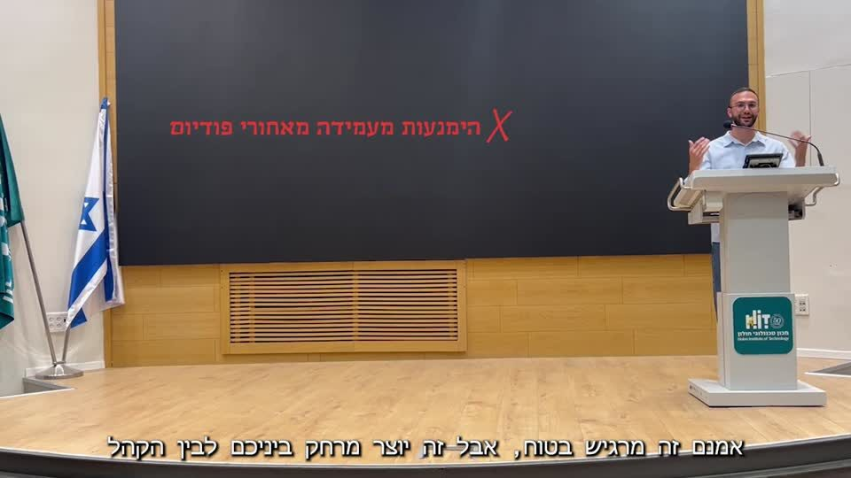
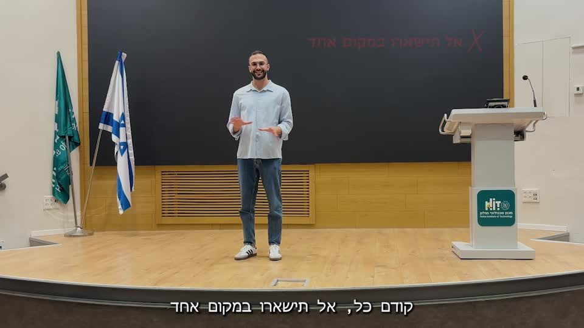

חזרה לפרויקטים
עמידה מול קהל
סרטונים, פודקאסט ואינפוגרפיקה אינטראקטיבית שיצרתי לקורס היברידי אסינכרוני, שמלמד סטודנטים לעמוד מול קהל בביטחון.
- קהל יעד
- סטודנטים ליזמות ולמשפטים
- התפקיד שלי
- תוכן, צילום, עריכה, בימוי, אינפוגרפיקות ואינטראקציות
- כלים
- Storyline, Base44, H5P, עריכת וידאו
- פורמט
- קורס היברידי אסינכרוני

האתגר
עמידה מול קהל היא מיומנות שלומדים דרך עשייה, ולא רק דרך הסבר. האתגר היה ללמד אותה בלמידה אסינכרונית, בלי מנחה בחדר, ולשמור על איזון בין ידע עיוני לבין תרגול מעשי.
לסטודנטים ליזמות ולמשפטים זו מיומנות ליבה: מצגת למשקיעים, טיעון בבית משפט.
מבנה הקורס
הקורס מלווה את הלומד בשישה שלבים. כל שלב משלב שאלות הבנה עיוניות ותרגולים מעשיים.
- התמודדות עם לחץ
- הופעה חיצונית ולבוש
- שפת גוף
- שימוש במרחב
- הקול ככלי עבודה
- יצירת קשר ומעורבות עם הקהל
התוצרים שלי

שפת גוף
פודקאסט

הסרטונים המלאים יוטמעו כאן אחרי ההעלאה ל-YouTube.